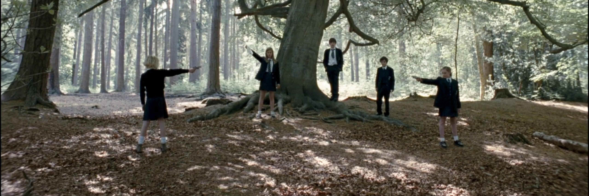
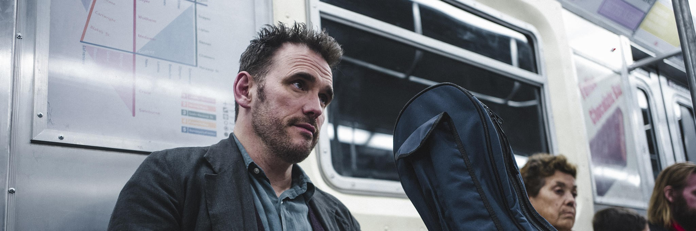
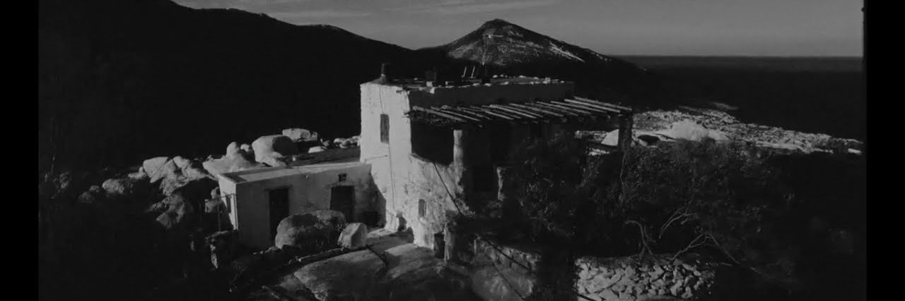

CORTOMETRAJES
NECKTIE (2013)
Cinco adolescentes se reunen en un bosque.
NIMIC (2019)
Un violonchelista profesional se encuentra con una extraña en el metro. Ese encuentro tendrá ramificaciones inesperadas y de gran alcance en su vida.
BLEAT (2022)
Ambientada en la isla griega de Tenedos, en las Cícladas. Una mujer vestida de negro está de luto dentro de una casa sencilla. La realidad se mezcla con la imaginación soñadora y la tradición con los deseos insidiosos.